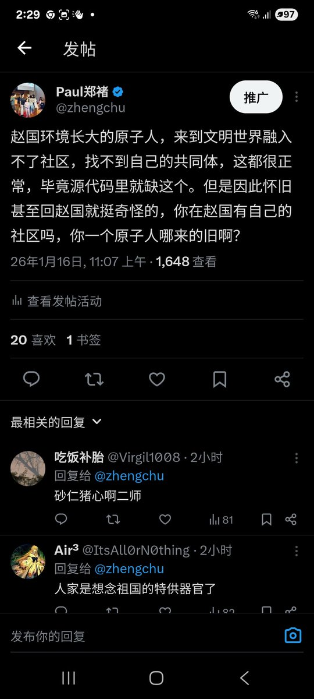

月影独下
@tadatsukiei
RT @zhengchu: 我们老中的人生，就仿佛水黾划过水面，留不下一点痕迹，当你回到你长大的地方，已经基本上没有人认识你了，因为每个地方平均二三十年就会实现一次人口替代。何况那个水面本身可能也不是池塘，是暴雨后路边的水洼，太阳一晒就已消失，我们住的房子房龄一般不会超过30年…

Paul郑褚
@zhengchu
我们老中的人生，就仿佛水黾划过水面，留不下一点痕迹，当你回到你长大的地方，已经基本上没有人认识你了，因为每个地方平均二三十年就会实现一次人口替代。何况那个水面本身可能也不是池塘，是暴雨后路边的水洼，太阳一晒就已消失，我们住的房子房龄一般不会超过30年，如果是北方，街头很少有超过10年 https://t.co/UL77JZrPCF